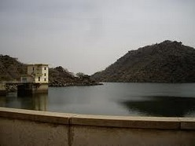

Categorie(s):
Fleuve,
Lac
Lac et barage du lagdo
A 50 km au sud de Garoua, en pleine zone sahélienne, se trouve le barrage hydro-électrique de Lagdo construit dans les années 1978-1984 par les camerounais avec le concours d’ingénieurs et d’ouvriers chinois. Ceux-ci ont payé un lourd tribut en vies humaines, un petit cimetière situé tout près du barrage est là pour le rappeler et leur rendre hommage.
Barrage du Lagdo
Ce barrage sur la Bénoué, inauguré en 1986 par le Président Paul Biya, est constitué de 4 turbines et fournit de l’électricité, non seulement au nord du Cameroun mais aussi à une bonne partie du sud.
Le périmètre du fleuve a été déclaré bassin agricole de la région, il permet l’irrigation de 15.000 hectares de cultures et assure l’autosuffisance alimentaire de la région. Le lac, d’une superficie de 586 km², offre un beau panorama rafraîchissant au touriste mais est aussi le lieu d’activité intense des pêcheurs et de cultivateurs (mil, riz, maïs...). De nombreux animaux tels qu’hippopotames et crocodiles y ont élu domicile.